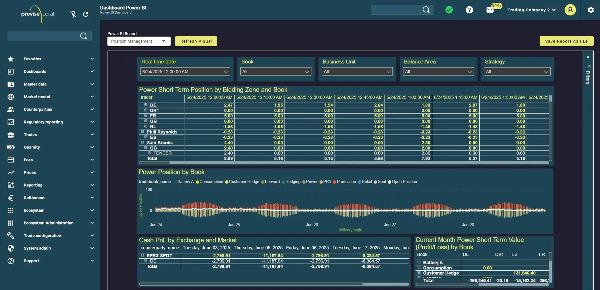
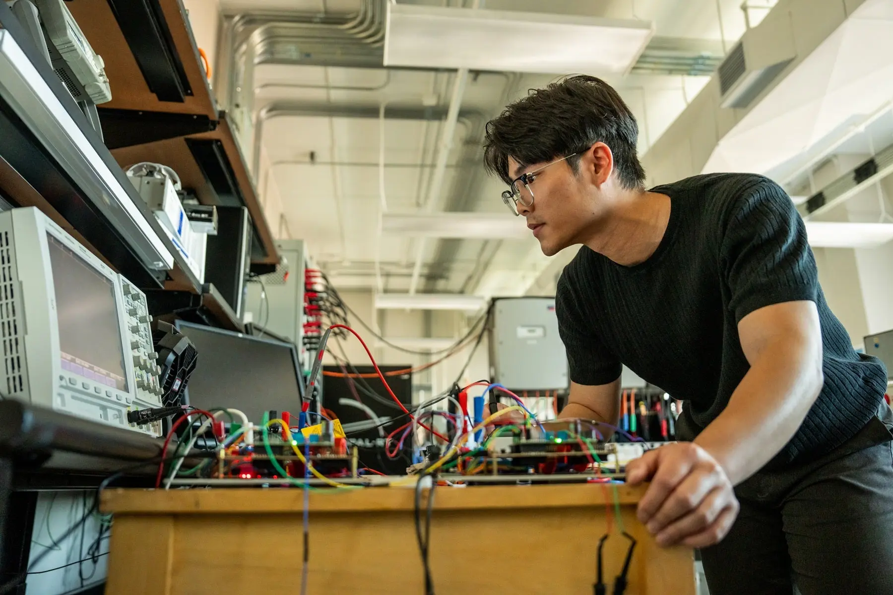
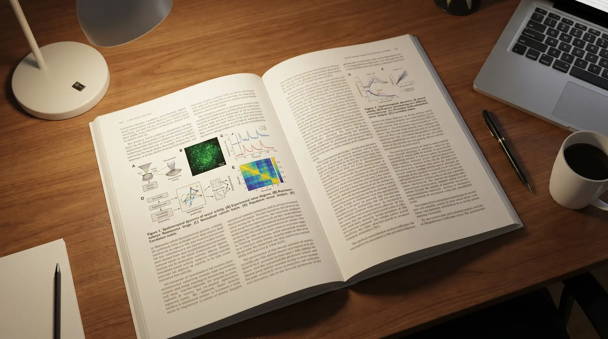
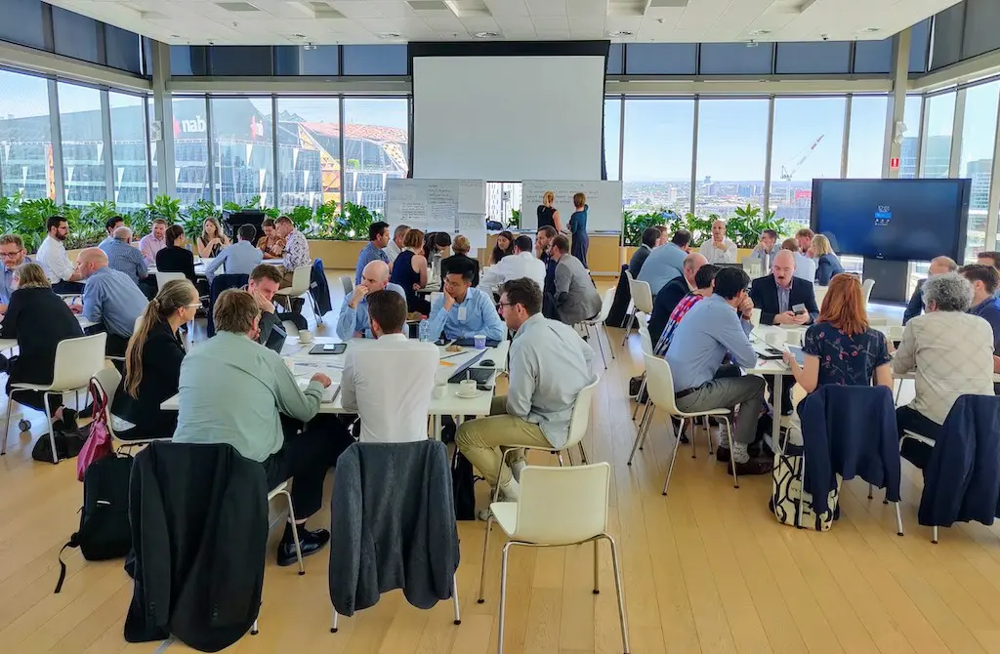
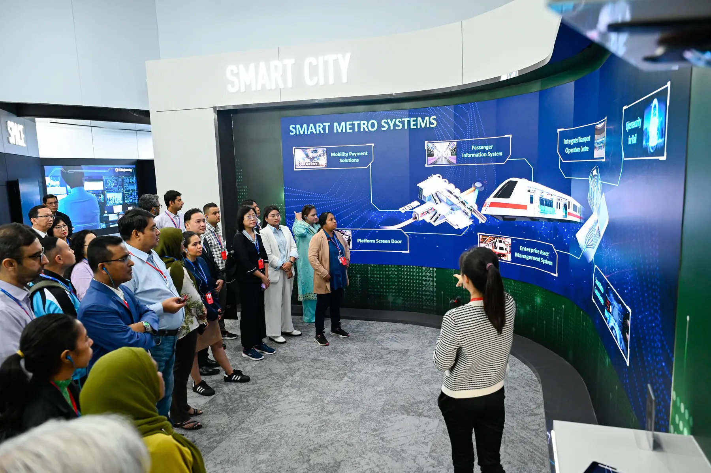
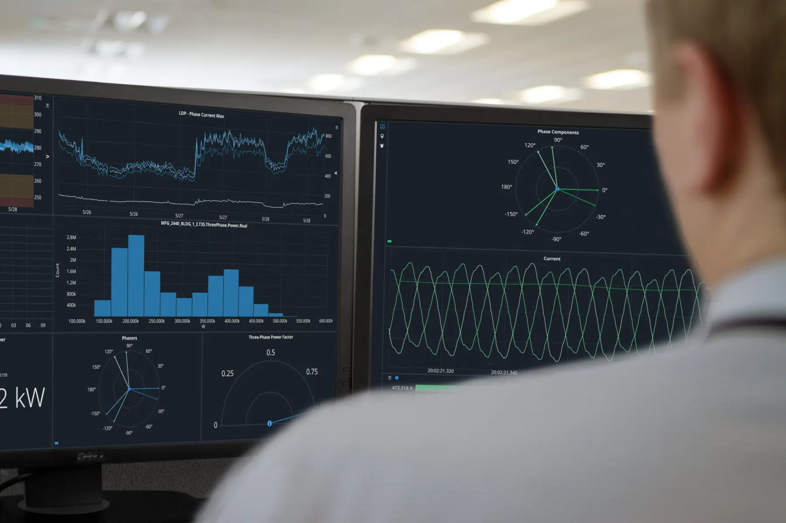
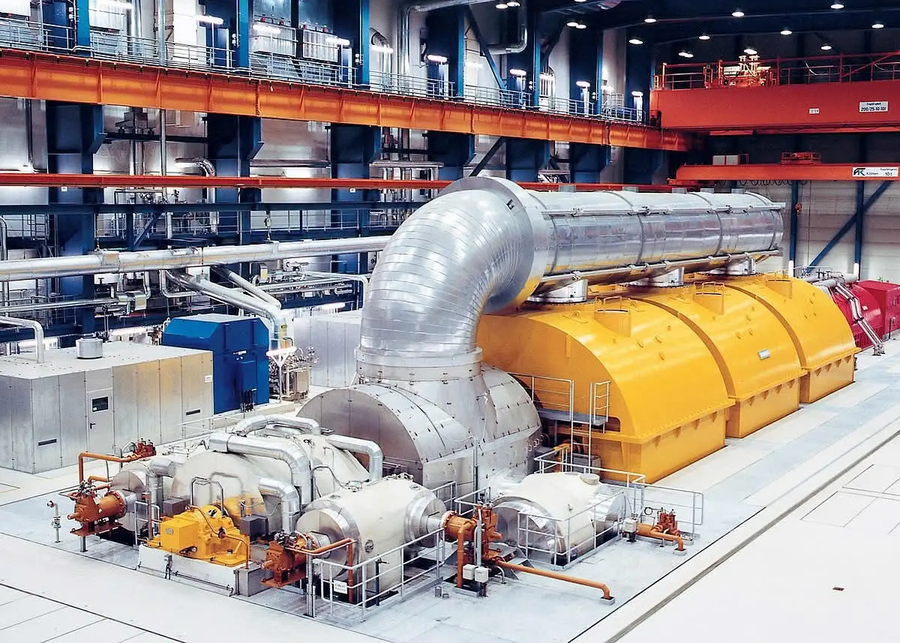

Shahid Beheshti University
Electrical Networks Research Institute
Studies, technology and specialist research for electrical networks and Iran’s power industry.

The original image could not be loaded.

The original image could not be loaded.

The original image could not be loaded.

The original image could not be loaded.

The original image could not be loaded.

The original image could not be loaded.

The original image could not be loaded.
The Electrical Networks Research Institute began its activities in 1400 (Solar Hijri) at Shahid Beheshti University. It was established to participate in studies and technology related to electrical networks and to respond to the country’s research needs through specialized centers.
 01
01
02 03
03 04
04 05
055 research areas are shown.

Based on the Institute’s official objectives, specialist collaboration is organized through the five pathways below. Send your subject and contact details to the Institute by email.

Cooperation on research projects responding to power-industry needs.
Services for different sectors of the power industry.

Transferring and localizing technical knowledge required by the country.
Directing graduate research toward useful power-industry outcomes.
Training skilled personnel and holding short specialist courses.
Joint research, engineering services, specialist education, knowledge transfer or a thesis proposal

PublishingAuthorization from the Ministry of Science for the journal “Research and Technology in the Power Industry,” intended to publish effective industry and university research.

EducationSeveral electricity-market workshops with Stockholm University and Iran Grid Management Company for experts from distribution and regional electricity companies across the country.
ConferenceParticipation in the seventh International Conference on Renewable Energy and Distributed Generation of Iran.

InternationalA periodic international seminar on “Transportation Challenges in Iran’s Future Smart Cities” with the Technical University of Berlin.
 Industry
IndustryEducational, research, engineering and implementation cooperation with companies including Moshanir, and long-term cooperation agreements.
EngineeringRelay testing and protection review at Shahid Rajaee Power Plant in Sari.


Maintenance-planning software for MAPNA 2.5 MW wind turbines.
Relay testing and protection review at Shahid Rajaee Power Plant in Sari.
Assessment and determination of network protection settings with distributed-generation resources.
8 documented projects are shown.
The specialist electricity-course system prepared by universities and industry experts in 1382 SH had not been updated in line with rapid technological change and no longer met the needs of companies and learners. Tavanir authorized the definition of situational courses; however, their number often exceeded the approved courses, creating inconsistencies in company training calendars and budgets.
Artificial intelligence and smart grids, power-industry restructuring, renewable energy, electrical-network protection and control, and power-system operation and planning.
Power-industry research projects, technical and engineering services, technical-knowledge localization and transfer, thesis and dissertation support, and specialist education.
The Institute began its activities in 1400 SH at Shahid Beheshti University.
Email enri@sbu.ac.ir or m_ameli@sbu.ac.ir, or use the telephone numbers in the contact section.
Tehran, Nobonyad Square, end of Shahid Babaei Expressway, Hakimiyeh, Bahar Boulevard, Shahid Abbaspour Technical and Engineering Campus, Power Transmission and Distribution Research Institute
Postal code: 1658953571
Open the Institute location in Google Maps to choose your route.
Open map and directionsResearch projects, technical and engineering services, specialist education and technical-knowledge transfer.